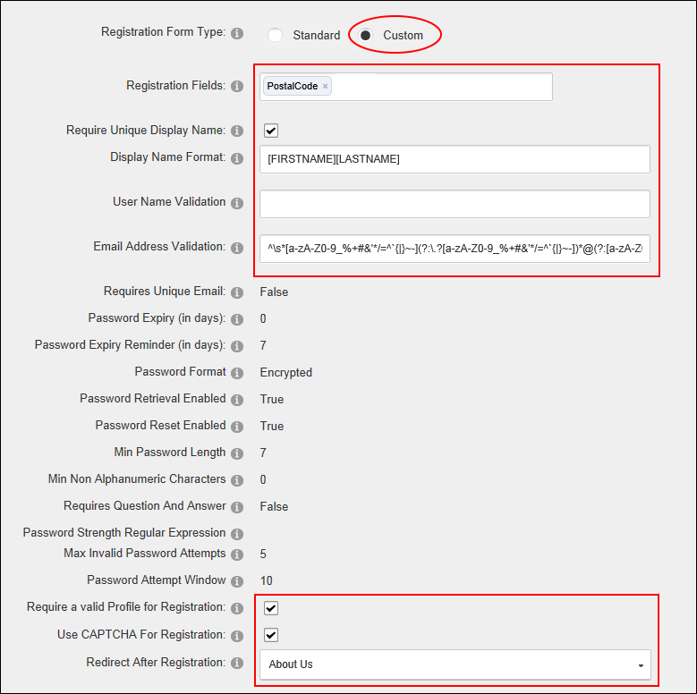

Configuring a Custom Registration Form
How to set the user registration options for this site. Settings include choosing the page users are redirected to after registration, optionally enabling the CAPTCHA security code feature and adding validation requirements.
- Navigate to Admin >
 Site Settings.
Site Settings.
- Select the User Account Settings tab.
- Expand the Registration Settings section and then modify one or more settings.
- At User Registration, select either Private, Public or Verified user registration. See "Enabling User Registration" for more information.
- Optional. At Receive User Registration Notification, to send a notification email to the user when they register. Note: A registration email will always be sent if the User Registration field above is set to Private because the Administrator will need to receive the notification to approve the user account.
- Optional. At Use Authentication Providers, to use Authentication providers during registration. Note: This setting may not be supported by all providers.
- In the Excluded Terms text box, enter a comma-delimited list of terms that user will be prevented from using in their Username or Display Name.
- Optional. At Use Profanity Filter, to use the profanity filter for the Username and DisplayName fields during registration.

- At Registration Form Type, select Custom and modify one or more settings as required.
- In the Registration Fields text box, begin enter the name of a user account field that is required during registration. When the correct matching field is displayed, click on the field name to select it. If this setting is used, this will take precedence over the other settings. The possible fields include Username, Email, Password, ConfirmPassword, DisplayName and all the Profile Properties.
- At Require Unique Display Name, select from these options:
- if each user will have a unique display name. If a user chooses a name that exists already this will suggest a modified name based on the user's first name and last name. Note: If this option is selected, you must ensure both Email and DisplayName are added to the Registration Fields text box above.
- .if multiple users can have the same display name. This is the default setting.
- In the Display Name Format text box, specify a format for the users display name. The format can include tokens for dynamic substitution such as [FIRSTNAME] [LASTNAME]. If a display name format is specified, the display name will no longer be editable through the user interface.
- In the User Name Validation text box, modify the user name validation expression if required.
- In the Email Address Validation text box, modify the provided email validation expression.
- At Password Expiry (in days) the number of days before a user's password expires is displayed. Users will be prompted to change their password the next time they login. Note 1: 0 = no expiry. Note: This field is only enforced if the user is using the regular DNN Authentication method. (I.e. They enter their User Name and Password when logging in). If the user logs in using alternate authentication methods such as Facebook, Live, Yahoo or Google, this setting will be ignored.
- At Password Expiry Reminder (in days) the number of days warning given to a user that they will be required to change their password is displayed.
- At Require a Valid Profile for Registration, select from these option:
- to select to require users to enter a valid profile during registration. Valid Profiles require the User Name, First Name, Last Names, Display Name, Email Address and Password fields to all be completed. In addition, any other fields that have been set as required on in the Profile Setting section are required when registering on the site. See "Configuring Profile Settings", See "Editing Profile Settings", or See "Adding a New Profile Property"
- . the check box to disable. This is the default setting.
- At Use CAPTCHA For Registration, to use the CAPTCHA security code box during registration - OR - .to remove CAPTCHA.
- At Redirect After Registration, select the name of the page that users are redirected to after registering on the site - OR - Select < None Specified > to disable redirection.

-
Click the Update button.